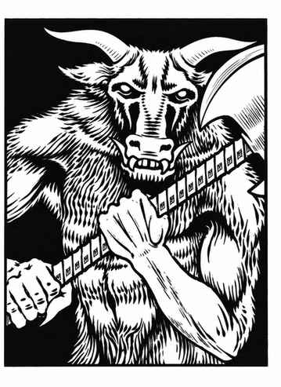

牛头怪 · Minotaur
 |
|
牛头怪通常只在荒野或地下的迷宫状区域出现。他们残暴并以人为食，虽然不聪明，却很狡猾，感官也极其敏锐。他们能够以极高的准确度凭气味追踪猎物，只要目标仍在视线内就一定会追击；除非敌人明显强大到无法战胜，否则他们会无所畏惧地攻击一切目标。
牛头怪会用角攻击身高 6 尺或更高的对手，或用咬攻击较矮的对手，分别造成 2–8 点和 1–4 点伤害。他们也会使用武器，通常是巨斧（视为戟）或连枷（伤害 +2）。牛头怪有自己的语言，另有 25% 的机会会说通用语。